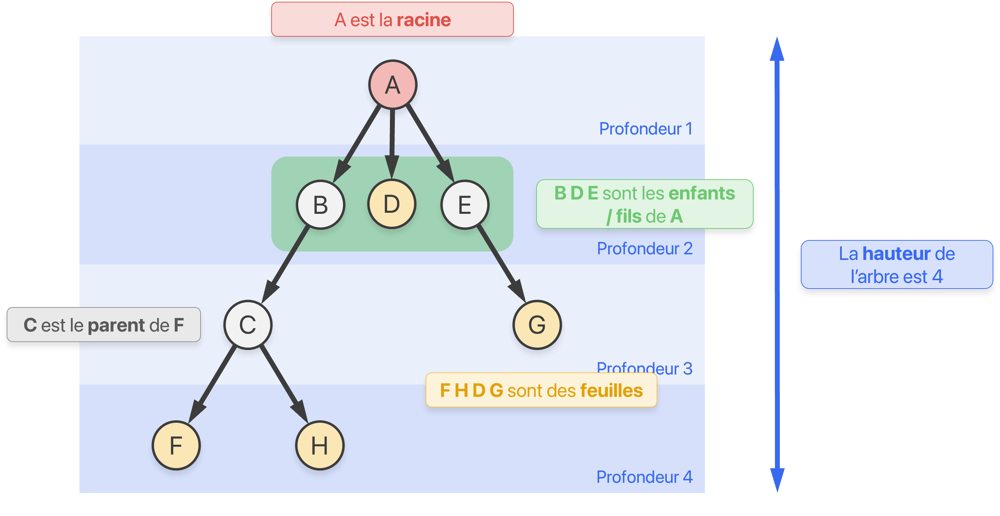
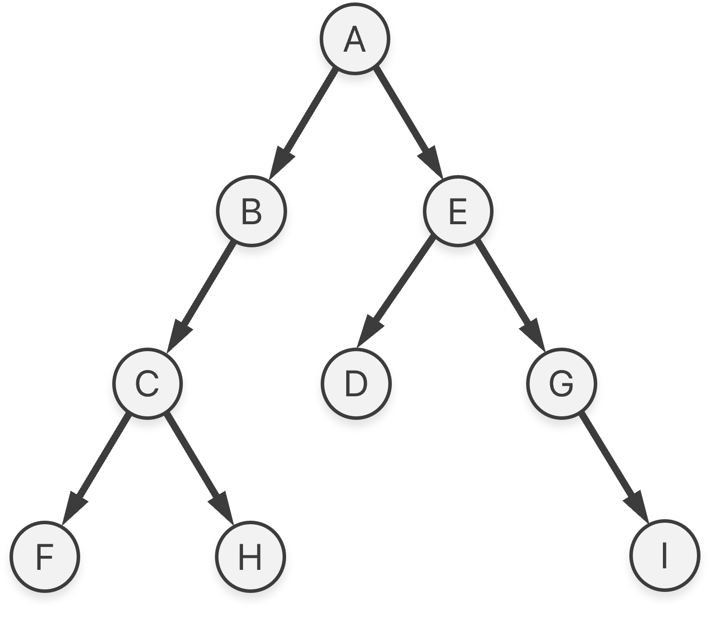
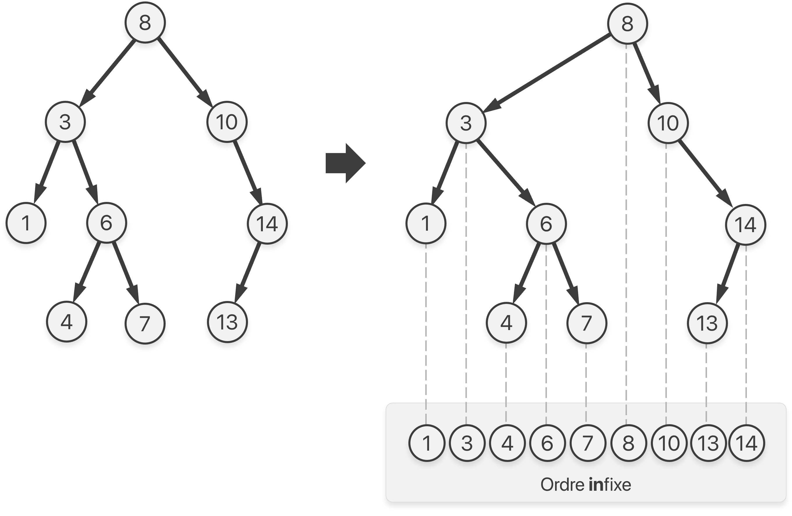

Les arbres binaires
Liens Capytale
- À la découverte des arbres binaires : Notebook Capytale ac40-3104814
- Les parcours des arbres binaires : Notebook Capytale e6d0-3126581
- Les arbres binaires de recherche : Notebook Capytale ddd2-3129906
Définitions
-
Un arbre est un graphe connexe et sans cycle. C'est une structure de données hiérarchique.
-
Vocabulaire associé :
Définition ambiguë
Attention à la définition vague de la profondeur d'un nœud et, par conséquent, de la hauteur d'un arbre ! Deux conventions existent. La profondeur d'un nœud est soit le nombre d'arêtes, soit le nombre de nœuds sur le chemin de la racine à ce nœud. L'exemple utilise cette dernière convention. La hauteur est définie comme la profondeur maximale atteinte par un nœud de l'arbre.
-
Un arbre binaire est un arbre où chaque nœud possède au plus deux fils ; un fils gauche et un fils droit.

-
Un arbre binaire est dit filiforme si la hauteur est maximale et équilibré si la hauteur est minimale.

-
Soit un arbre binaire de taille \(n\) (son nombre de nœuds), alors sa hauteur \(h\) (suivant la convention précédente) vérifie :
\[\big\lceil \log_2 \left( n + 1 \right) \big\rceil \leq h \leq n\]On retient qu'un arbre équilibré avec \(n\) nœuds a une hauteur d'environ \(\log_2(n)\).
-
Implémentation minimale d'un arbre binaire :
class Noeud: def __init__(self, valeur, noeud_gauche, noeud_droit): self.valeur = valeur # (1)! self.gauche = noeud_gauche # (2)! self.droit = noeud_droit # (3)!- Une valeur associée à un nœud (un nombre, une chaîne de caractères etc.)
- Une référence vers le nœud fils gauche.
Nones'il n'existe pas. - Une référence vers le nœud fils droit.
Nones'il n'existe pas.
Chaque nœud d'un arbre peut être vu comme la racine d'un sous-arbre ! Il est alors assez courant de confondre les notions de nœuds et d'arbres.
Algorithmes classiques
-
La plupart des algorithmes sur les arbres binaires sont récursifs, car un arbre binaire est une structure de données récursive.

-
La taille d'un arbre \(A\) (son nombre de nœuds) peut être définie récursivement comme :
\[ \text{taille}(A)= \begin{cases} 0 & \text{si} \ A = \varnothing \\ 1 + \text{taille}(A_g) + \text{taille}(A_d)& \text{sinon} \end{cases} \]Où \(A_g\) (resp. \(A_d\)) est le sous-arbre gauche (resp. droit) de \(A\). L'implémentation en Python est alors immédiate :
def taille(racine: Noeud): """ Renvoie la taille de l'arbre dont la racine est `racine` """ if racine is None: return 0 else: return 1 + taille(racine.gauche) + taille(racine.droit) -
La hauteur d'un arbre \(A\) :
\[ \text{hauteur}(A)= \begin{cases} 0 & \text{si} \ A = \varnothing \\ 1 + \max\Big( \text{hauteur}(A_g),\ \text{hauteur}(A_d) \Big) & \text{sinon} \end{cases} \]def hauteur(racine: Noeud): """ Renvoie la hauteur de l'arbre dont la racine est `racine` """ if racine is None: return 0 else: return 1 + max(hauteur(racine.gauche), hauteur(racine.droit))
Parcours en profondeur d'un arbre binaire
-
Il existe trois parcours en profondeur d'un arbre binaire suivant l'ordre de visite de la racine d'un sous-arbre :

-
Finalement, en terme de code, il suffit de déplacer une simple ligne de code :
Décommenter la ligne suivant le parcours souhaitédef parcours(racine: Noeud): if racine is not None: # print(racine.valeur) # Parcours préfixe parcours(racine.gauche) # print(racine.valeur) # Parcours infixe parcours(racine.droit) # print(racine.valeur) # Parcours suffixe -
Le parcours préfixe est le parcours en profondeur classique. Le parcours infixe sera utile pour afficher les valeurs d'un ABR dans l'ordre.
Arbre Binaire de Recherche (ABR)
-
Un Arbre Binaire de Recherche (ABR) est un arbre binaire où la valeur (qu'on appelle clé) de chaque nœud est inférieure à toutes les valeurs dans son sous-arbre droit et supérieure à toutes les valeurs dans son sous-arbre gauche.

Le parcours infixe permet de traiter les nœuds par ordre croissant.
-
Cette structure de données permet de maintenir des valeurs triées (et donc de rechercher rapidement une valeur grâce à une recherche dichotomique) et d'insérer de manière efficiente de nouvelles valeurs.
| Structure | Complexité moyenne insérer |
Complexité moyenne rechercher |
|---|---|---|
| Tableau non-trié | \(O(1)\) |
\(O(n)\) |
| Tableau trié | \(O(n)\) |
\(O(\log n)\) |
| ABR | \(O(\log n)\) |
\(O(\log n)\) |